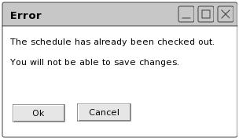

Section 2.7: Server Administration
In order to check out a schedule an administrator must click File-->Open Schedule. The Scheduler project will bring up a list of Schedules. The administrator then clicks open and a Schedule will open. Figure 101 in section 2.8.2 goes over the process. If the schedule is already checked out, then the Scheduler will display an alert that warns the administrator that changes will not be saved. Once a Schedule has been checked out by an administrator, no other administrators can make changes to the schedule. Other administrators can open a schedule, change settings, and generate a schedule, however the changes will not be saved to the permanent Schedule.

Figure 98: Adding Instructor Dialogue
prev: feedback-student | next: non-functional requirements | up: up | index: index